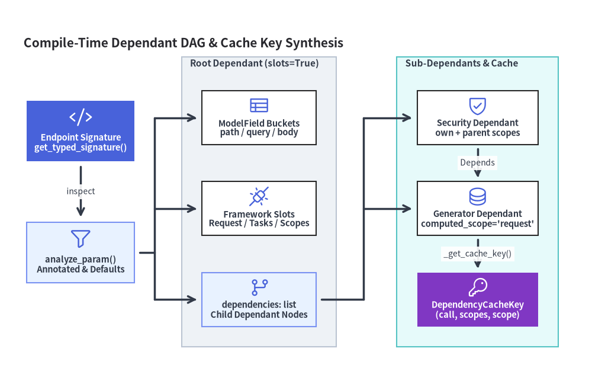
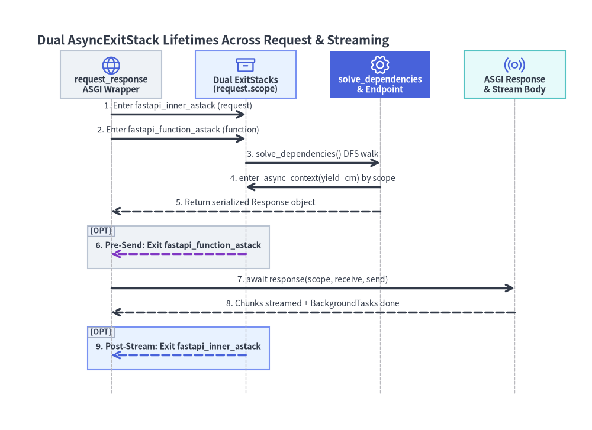

Dependant DAG コンパイルと solve_dependencies()
FastAPI の依存性注入（DI）エンジンは、シグネチャのリフレクション処理とリクエスト実行処理を ルート登録時のコンパイルフェーズ（fastapi/dependencies/utils.py の get_dependant() と analyze_param()）と リクエスト単位の再帰解決フェーズ（fastapi/dependencies/models.py の Dependant と solve_dependencies()）の 2 段階に分離しています。すべてのエンドポイントとサブ依存関係は起動時に一度だけ省メモリな有向非巡回グラフ（Dependant DAG）へとコンパイルされるため、実行時には事前分類済みの ModelField バケットの走査、3 要素タプルによるキャッシュ再利用、ツリー全体のバリデーションエラー集約、そして 2 階層の AsyncExitStack によるジェネレータ終了制御を決定論的に高速実行できます。

1. Dependant データクラスとフィールド構成
fastapi/dependencies/models.py の Dependant は @dataclass(slots=True) として定義されています。インスタンスごとの __dict__ を排除することで、数百のルートや多段のルータ依存チェーンを持つ大規模アプリケーションでもメモリフットプリントを最小限に抑えます。各 Dependant ノードは、呼び出し対象の入力を 5 つの ModelField バケット、子 dependencies リスト、6 つのフレームワーク注入スロット、および OAuth2 スコープ属性に分割して保持します。
| フィールド分類 | Dependant の属性（v0.162.2） |
solve_dependencies() における実行時の役割 |
|---|---|---|
| 検証対象リクエスト引数 | path_params, query_params, header_params, cookie_params (list[ModelField]) |
request_params_to_args() により request.path_params, query_params, headers, cookies から抽出・検証。 |
| 検証対象ボディ引数 | body_params (list[ModelField]) |
request_body_to_args() により解析済み JSON または FormData（Body, Form, File）を検証。 |
| サブ依存関係エッジ | dependencies (list[Dependant]) |
self.call 実行前に深さ優先（DFS）で解決。ルートデコレータの dependencies=[Depends(...)] も先頭に挿入される。 |
| コネクション注入スロット | request_param_name, websocket_param_name, http_connection_param_name (str | None) |
Request（HTTP 専用）、WebSocket（WS 専用）、または両者を統合する Starlette の HTTPConnection を直接注入。 |
| フレームワーク文脈スロット | response_param_name, background_tasks_param_name, security_scopes_param_name (str | None) |
ヘッダ・ステータス集約用の共有 Response、BackgroundTasks キュー、または SecurityScopes を注入。 |
| 呼び出し・スコープメタ情報 | name, call, use_cache, path, scope, own_oauth_scopes, parent_oauth_scopes |
引数バインド名、キャッシュ可否、ジェネレータ終了スタックの寿命境界、および上位からの OAuth2 スコープ継承を制御。 |
1.1 computed_scope と 3 要素タプル DependencyCacheKey
Dependant が slots=True を採用しているため、FastAPI は寿命スコープとキャッシュキーを fastapi/dependencies/models.py 内の純粋ヘルパー関数で算出します。呼び出し可能オブジェクトの種別判定は、id(call) でハッシュ化するラッパー _CallIdentity と @lru_cache(maxsize=4096) によって、__hash__ を実装しない呼び出し可能インスタンスに対しても $O(1)$ で動作します。
_get_computed_scope(*, dependant: Dependant) -> str | None:dependant.scope（"function"または"request"）が明示指定されていればその値を返し、未指定の場合は_is_gen_callable(dependant.call)と_is_async_gen_callable(dependant.call)（functools.partialや__wrapped__チェーン、および__call__メソッドを再帰アンラップして検査）に基づき、ジェネレータ依存関係ならデフォルトで"request"、通常の関数・コルーチンならNoneを返します。_get_cache_key(*, dependant: Dependant, uses_scopes_cache: _UsesScopesCache | None = None) -> DependencyCacheKey:(dependant.call, scopes_for_cache, _get_computed_scope(dependant=dependant) or "")という 3 要素タプル（fastapi/types.pyのDependencyCacheKey = tuple[Callable[..., Any] | None, tuple[str, ...], str]）を生成します。_uses_scopes()によるスコープ枝刈り最適化:scopes_for_cacheがtuple(sorted(set(_get_oauth_scopes(dependant=dependant))))になるのは、_uses_scopes()がTrue（own_oauth_scopesの宣言、SecurityScopesの注入、SecurityBaseインスタンスの呼び出し、または子孫ノードでのスコープ利用のいずれかに該当）の場合 のみ です。DB セッション生成ジェネレータ（get_db）のような非セキュリティ依存関係では_uses_scopes()がFalseとなりscopes_for_cacheが()に畳み込まれるため、エンドポイント直下とSecurity(..., scopes=["projects:read"])配下の両方から呼ばれても同一リクエスト内で確実に 1 つの DB セッションが共有されます。
2. コンパイル時の DAG 構築（get_dependant と analyze_param）
APIRoute や APIWebSocketRoute の初期化時、_build_dependant_with_parameterless_dependencies() は get_dependant(path=path, call=call, scope="function") を呼び出し、デコレータ引数の dependencies=[Depends(...)] を宣言順が保たれるよう逆順で get_parameterless_sub_dependant() により先頭へ挿入します。get_dependant() 内部は以下の手順で進行します。
- 型解決済みシグネチャ抽出（
get_typed_signature）:inspect.signature(call, eval_str=True)を実行し（TYPE_CHECKING限定の型によりNameErrorが発生した場合、Python 3.14 以降では PEP 649 のannotationlib.Format.FORWARDREFへフォールバック）、アンラップした関数の__globals__を用いて文字列ForwardRefをevaluate_forwardref()で実体型へ解決します。 Annotatedとデフォルト値の展開（analyze_param）: PEP 695 のtypeエイリアス（is_typealiastype）を展開した上でAnnotated[T, ...]のメタデータを走査し、末尾の FastAPI マーカー（Param,Body,Depends）を採用します。Annotated内にFieldInfoがある場合、再利用可能な型エイリアスを破壊しないようcopy_field_info()で複製してからparam.default（またはRequiredParam）を代入します。Annotated内と=の両方に FastAPI マーカーを重ねて指定した場合は起動時にAssertionErrorで拒否されます。- クラス依存関係の省略記法解決:
Depends()のようにdependency=Noneで宣言された場合（例:Annotated[CommonQueryParams, Depends()]）、frozen データクラスであるDependsをdataclasses.replace(depends, dependency=type_annotation)で複製し、型アノテーション自身を呼び出し対象に設定します。 - 暗黙的なパラメータ分類規則:
Dependsでもフレームワーク注入型（Request,WebSocket,HTTPConnection,Response,BackgroundTasks,SecurityScopes）でもなく、明示的なQuery/Path/Header/Cookie/Bodyも付与されていない引数は、次の優先順で自動分類されます。param_name in path_param_names（パステンプレートの{...}から抽出） $\rightarrow$params.Path（スカラー型であることを検証）。UploadFileまたはそのシーケンス型 $\rightarrow$params.File。- 非スカラー型（
not field_annotation_is_scalar()：BaseModel,Mapping,bytes以外のSequence,dataclass, カスタム Pydantic スキーマ型） $\rightarrow$params.Body。 - 上記以外のすべてのスカラー型 $\rightarrow$
params.Query。
- 起動時のスコープ逆転ガード（
DependencyScopeError）: 子Dependsへ再帰する直前に、親ジェネレータの_get_computed_scope(dependant)が"request"であるにもかかわらず子がscope="function"を要求していないかを検査します。レスポンス配信前に閉じられる"function"スコープのリソースに、配信完了まで生存する"request"スコープの親ジェネレータが依存する寿命逆転バグを起動時にDependencyScopeErrorとして即座に検出します。
3. solve_dependencies() による実行時解決
HTTP リクエスト（get_request_handler）または WebSocket ハンドシェイク（get_websocket_app）が到着するたび、solve_dependencies() は dependant ツリーを深さ優先・帰りがけ順（post-order DFS）で再帰走査します。
- 動的な依存関係オーバーライド:
dependant.dependencies内の各sub_dependantに対し、dependency_overrides_provider.dependency_overrides（app.dependency_overrides）に差し替え関数が登録されていれば、_get_oauth_scopes(sub_dependant)とsub_dependant.scopeを引き継いだuse_sub_dependant = get_dependant(...)を動的に構築して解決しつつ、dependency_cacheのキーには元のsub_dependantのキーを維持します。 - 呼び出しディスパッチとリクエスト内メモ化: 子ノード自身の依存解決が完了した後、
sub_dependant.use_cacheがTrueかつsub_dependant_cache_keyがdependency_cacheに存在すればキャッシュ値を即座に返します。未キャッシュの場合は呼び出し種別に応じて実行します。- ジェネレータ（
yield）:_solve_generator()へ委譲し、非同期ジェネレータはasynccontextmanager(call)(**sub_values)、同期ジェネレータはcontextmanager_in_threadpool(contextmanager(call)(**sub_values))でラップして対象のAsyncExitStackへ登録します。 - 非同期コルーチン（
async def）: イベントループ上で直接await call(**solved_result.values)を実行します。 - 同期関数・クラス（
def/class）: ブロッキング処理でイベントループを止めないよう Starlette のawait run_in_threadpool(call, **solved_result.values)でワーカースレッドへオフロードします。
- ジェネレータ（
- ツリー全体のエラー集約（Fail-Fast しない設計）: 子
Dependantで検証エラー（solved_result.errors）が発生した場合、solve_dependencies()はその子関数の呼び出しをスキップしてエラーを追記し、残りの兄弟依存関係および自身のpath_params,query_params,header_params,cookie_params,body_paramsの検証を最後まで続行 します。ツリー全体の走査が完了した後に初めてRequestValidationError(errors)（HTTP 422）またはWebSocketRequestValidationErrorが送出されるため、クライアントは 1 回のレスポンスですべての不正箇所を一括把握できます。
3.1 二重 AsyncExitStack によるライフタイム制御アーキテクチャ
FastAPI v0.162.2 は、fastapi/routing.py の request_response() 内で生成される 入れ子構造の 2 つの AsyncExitStack によって yield 依存関係のクリーンアップ時期を制御します（なおマルチパート FormData の一時ファイルをミドルウェア完了後に閉じる用途には、fastapi/middleware/asyncexitstack.py の AsyncExitStackMiddleware が設ける最外殻の fastapi_middleware_astack が別途使われます）。
fastapi_function_astack（scope="function"）:response = await f(request)の直前で開始し、f(request)がシリアライズ済みのResponseオブジェクトを返した 直後、すなわちawait response(scope, receive, send)がソケットへ送信を始める 前 に__aexit__を実行します。Depends(dep, scope="function")を指定したジェネレータでは、エンドポイント実行とserialize_response()が終わった段階（レスポンスヘッダ送出前）で確実にyield後の後処理が走ります。fastapi_inner_astack（scope="request"、yield依存関係の既定値）:f(request)とawait response(scope, receive, send)の双方を包んでおり、ASGI レスポンス本体のストリーミング配信およびBackgroundTasksがすべて完了した後 に__aexit__を実行します。もしエンドポイント内で例外が発生した際にyield依存関係が裸のexcept:等で例外を握り潰して再送出しなかった場合、response_awaitedフラグがFalseのまま残るため、request_response()がFastAPIError("Response not awaited...")を送出して不具合を即座に検知します。

4. コンパイル済み Dependant ツリーとキャッシュキーの検証
Python コードから get_dependant()、_get_computed_scope()、_get_cache_key() を直接呼び出すことで、パラメータの自動分類や共有ジェネレータにおける OAuth2 スコープ枝刈り挙動を確認できます。
from typing import Annotated, AsyncIterator
from fastapi import Depends, Request, Security
from fastapi.dependencies.models import _get_cache_key, _get_computed_scope
from fastapi.dependencies.utils import get_dependant
from fastapi.security import SecurityScopes
async def get_db() -> AsyncIterator[str]:
yield "db_conn"
async def require_actor(
scopes: SecurityScopes,
db: Annotated[str, Depends(get_db)],
) -> dict[str, object]:
return {"db": db, "scopes": scopes.scopes}
async def list_projects(
org_id: int,
request: Request,
db: Annotated[str, Depends(get_db)],
actor: Annotated[
dict[str, object],
Security(require_actor, scopes=["projects:read"]),
],
limit: int = 20,
) -> dict[str, object]:
return {"org_id": org_id, "limit": limit, "db": db, "actor": actor}
root = get_dependant(
path="/orgs/{org_id}/projects",
call=list_projects,
scope="function",
)
assert [f.name for f in root.path_params] == ["org_id"]
assert [f.name for f in root.query_params] == ["limit"]
assert root.request_param_name == "request"
db_direct, actor_dep = root.dependencies
db_nested = actor_dep.dependencies[0]
assert _get_computed_scope(dependant=db_direct) == "request"
# Non-security sub-dependency collapses scopes_for_cache to () in both branches:
assert _get_cache_key(dependant=db_direct) == (get_db, (), "request")
assert _get_cache_key(dependant=db_nested) == (get_db, (), "request")
assert _get_cache_key(dependant=actor_dep) == (
require_actor,
("projects:read",),
"",
)
続いて、認証スキームが Dependant と OpenAPI スキーマ生成の双方に統合される仕組みは SecurityBase 階層と HTTPConnection を、抽出された各引数を ModelField が検証・変換する内部実装は _compat/v2.py・ModelField・直列化 を参照してください。